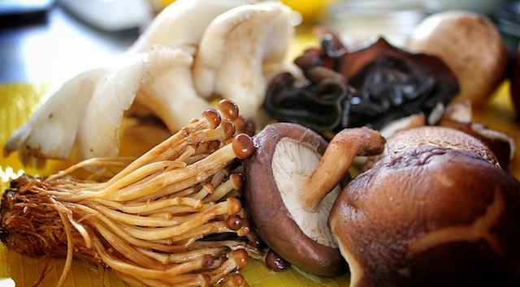

Shroom Gravy!

Who says you can't get gravy from a mushroom?
Introducing our Simple Vegan Mushroom Gravy Recipe — the third in our series of easy to prepare, nutritious and delicious PlantPowered holiday recipes
For those new to the PlantPower lifestyle, it might seem odd at first to create gravy out of mushrooms instead of turkey lard, but you will be amazed at how flavorful it is — I can guarantee you won't miss your old high fat, processed flour version one bit. Even our kids and relatives can't get enough of it.
Ingredients:
- 4 cups of the best farmers market mix of mushrooms you can find
- 1 cup of macadamia nut oil
- 1 small lemon
- 2 tablespoons gluten free tamari
- Filtered water
Preperation:
- Wash and destem the mushrooms.
- Heat the macadamia nut oil in a large skillet and add the mushrooms. Saute them for about 5 minutes until they begin to brown and the juices release.
- Turn the flame off and squeeze half a lemon over the mushrooms, then add the tamari.
- Transfer mushrooms into a Vitamix (or BlendTec or other high-powered blender) and blend until very smooth
- Pour the mushroom puree back into the sauce pan and add filtered water, 1/2 cup at a time until the gravy reaches the desired consistency. If it needs more salt, add another splash of tamari.
Serve & Amaze!